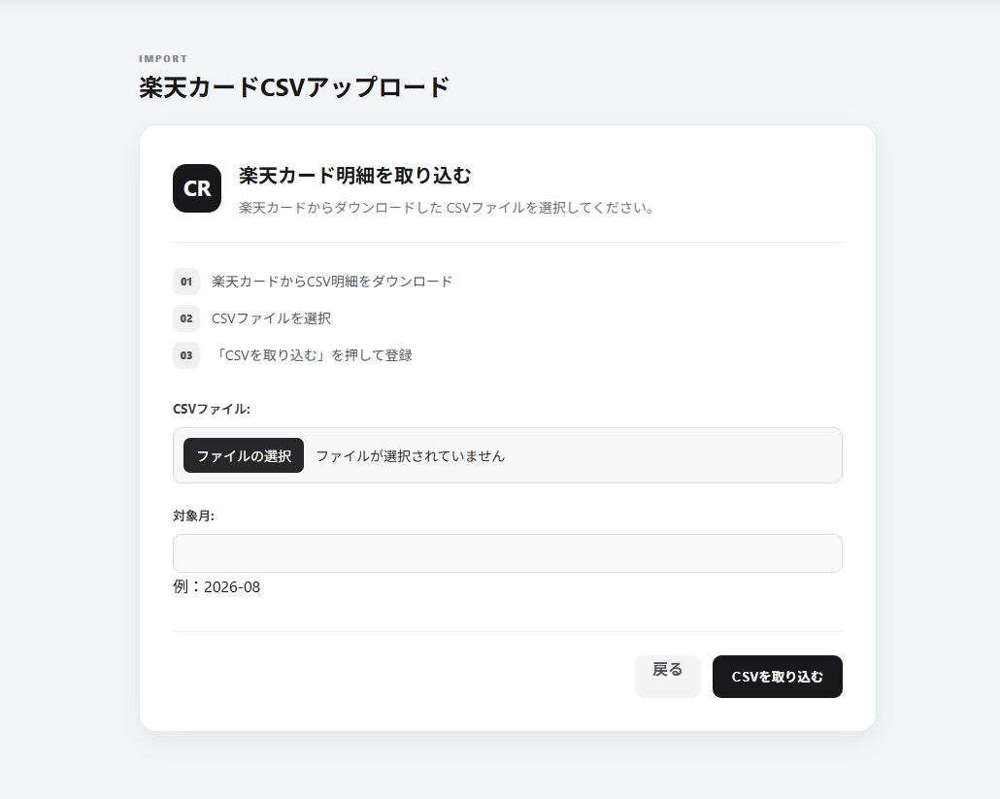
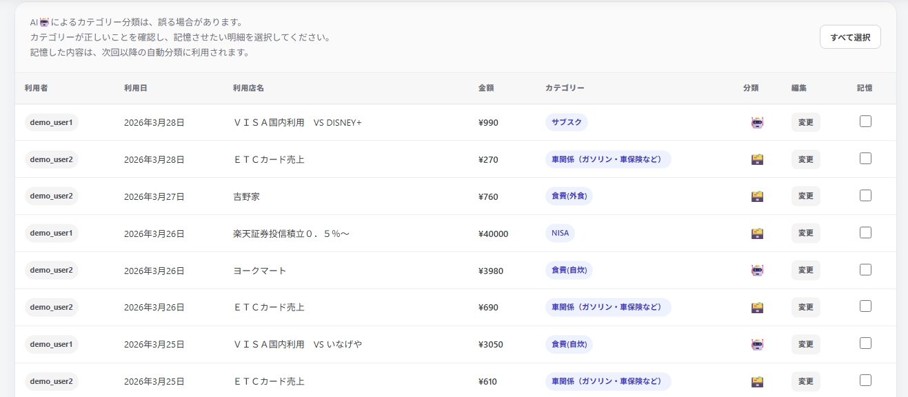
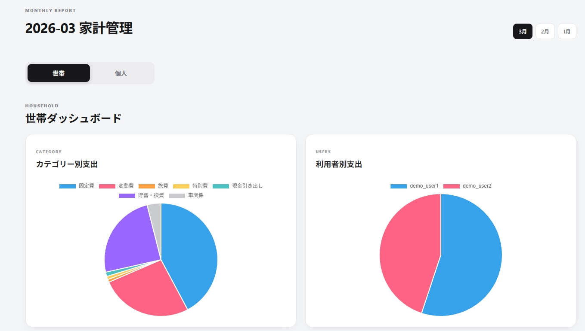
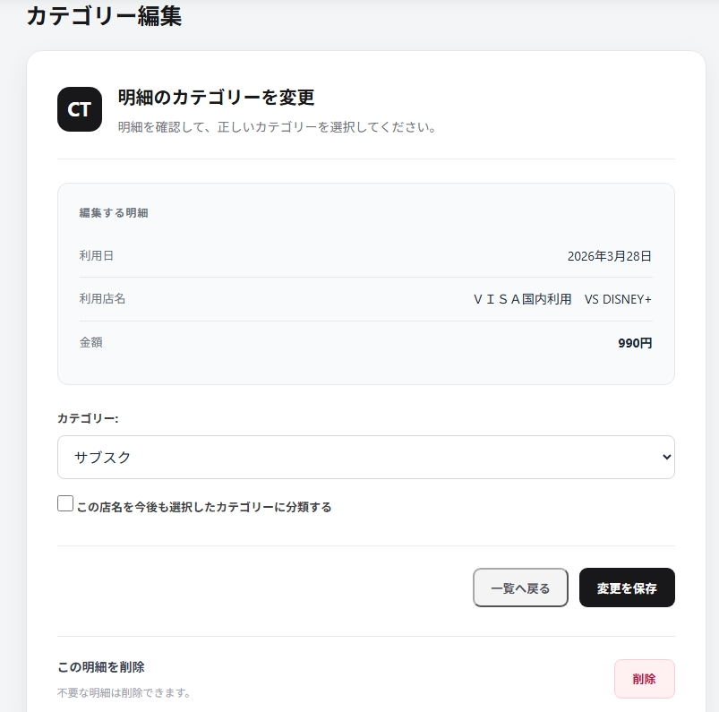
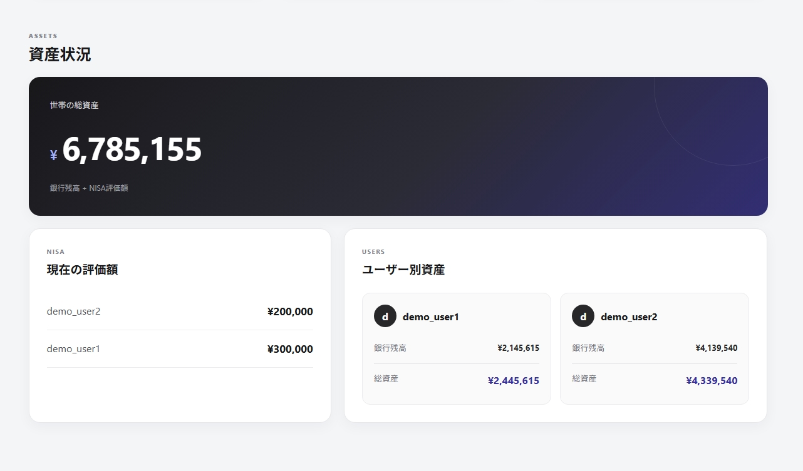

FEATURE 01
CSV取り込み・データ整形
楽天カード・楽天銀行・三菱UFJ銀行・ろうきんの 4種類の利用明細に対応しています。 金融機関ごとに異なるCSVの形式をpandasで整形し、 データベースに保存できるようにしました。
日付や金額、取引先名などのデータ形式を統一することで、 異なる金融機関の明細を一つのアプリで 管理できるようにしています。
- CSVアップロード
- pandasによるデータ整形
- 整形データのデータベース登録
PERSONAL PROJECT / 01
二人で使う家計管理Webアプリ
CSV明細の取り込み・整形から、支出の自動分類、分類ルールの蓄積、収支の可視化まで。使うほど繰り返しの分類作業を減らせる家計管理Webアプリケーションです。
01 / OVERVIEW
二人の家計を管理するなかで、カードや銀行の明細を毎回手入力する負担を減らしたいと考え、MoneyMindを制作しました。
カード・銀行の利用明細をCSVで取り込み、pandasで形式を整えてデータベースに保存。取引先名に応じた支出分類と分類ルールの蓄積、個人と世帯全体の切り替え、月別の収支・グラフ、NISA評価額の記録まで、一つの画面から管理できることを目指しました。
02 / FEATURE DETAILS
スクリーンショットとともに、入力から集計までの流れを紹介します。

FEATURE 01
楽天カード・楽天銀行・三菱UFJ銀行・ろうきんの 4種類の利用明細に対応しています。 金融機関ごとに異なるCSVの形式をpandasで整形し、 データベースに保存できるようにしました。
日付や金額、取引先名などのデータ形式を統一することで、 異なる金融機関の明細を一つのアプリで 管理できるようにしています。

FEATURE 02
取引先名をNFKC正規化・大文字化して表記ゆれを抑え、①世帯別の保存済みルール（長いキーワードから優先）②固定ルール③機械学習モデル ④AIの順にカテゴリを判定します。機械学習の予測信頼度が0.6以上なら予測結果を採用し、それ未満なら「未分類」とします。後に分類結果は手動で修正でき、取引先とカテゴリの対応を次回の取込に再利用できます。

FEATURE 03
取引データを個人と世帯の単位で管理し、表示対象を切り替えられるようにしました。月別の明細や収支をそれぞれ確認できます。

FEATURE 04
取り込んだ明細は月別に一覧表示され、 カテゴリの確認や編集ができます。 自動分類されたカテゴリが適切でない場合は、 手動で修正し、分類ルールとして保存することで 次回以降の取り込みにも反映できます。
また、個人と世帯全体の表示を切り替えながら、 月ごとの収支やカテゴリ別の支出内訳、 支出の推移をグラフで確認できます。 数値の一覧だけでなく、家計の状況を 視覚的に把握できるようにしました。

FEATURE 05
銀行の利用明細から取得した口座残高と、 手動で入力したNISAの評価額を組み合わせ、 現金資産と投資資産をまとめて確認できるようにしました。
日々の収支管理だけでなく、 現在の資産状況も把握できるようにすることで、 家計全体を一つのアプリで管理できる構成にしています。
03 / LIVE DEMO
公開用のデモアカウントとサンプルCSVを用意しています。
下記のアカウントでログインし、各画面をご確認いただけます。
| ユーザー1 | ユーザー:demo_user1 / パスワード:user_port11 |
|---|---|
| ユーザー2 | ユーザー:demo_user2 / パスワード:user_port22 |
※ デモ専用アカウント
CSV取り込み機能を試す際は、 こちらのサンプル明細をご利用ください。 クレジットカード明細をアップロードを選択してください。
ファイル名：demo_user2_card明細2026年3月.csv
※ CSV取り込みが正常に動作しない場合は、 操作デモ動画から取り込み手順と結果をご確認いただけます。
04 / VIDEO
公開環境ではRenderの無料枠やGemini APIを利用しているため、 起動直後やAPIの利用状況によっては処理に時間がかかったり、 一時的に正常に動作しない場合があります。 その場合にも主要機能や操作の流れを確認できるよう、 実際の動作を動画で紹介しています。
収録内容：CSV取込 → 支出の分類・修正 → 個人／世帯切替 → 集計グラフ。
05 / DEVELOPMENT
楽天カード・楽天銀行・三菱UFJ銀行・ろうきんで 異なるCSV形式を、pandasを用いて自動的に整形する処理を実装しました。 これにより、各金融機関からダウンロードしたCSVファイルを 手作業で加工することなく、そのままアプリに取り込めるようにしました。
保存済みルール・固定ルール・機械学習・AIの4段階で分類し、機械学習の信頼度が低い結果は自動確定しない設計にしました。修正したルールは次回の分類に再利用することで分類する手間を減らしました。
データベースに保存した明細を集計し、 JavaScriptのChart.jsを用いてグラフを作成しました。 カテゴリ別の支出内訳や月別の収支推移を表示するほか、 複数のカテゴリをまとめて集計することで、 家計全体の支出傾向を把握しやすくしています。 また、個人と世帯全体の表示切り替えにも対応し、 それぞれの収支状況を視覚的に確認できるようにしました。
Renderを利用してWebアプリケーションをデプロイし、 ブラウザから実際に操作できる環境を構築しました。 また、ポートフォリオ閲覧者が安心して機能を試せるよう、 通常利用するデータベースとデモ用データベースを分離しています。
06 / GENERATIVE AI
アプリの中で使うAIと、開発を補助するAIは役割を分けて紹介します。
Gemini APIを使ったカテゴリのAI分類も実装しています。保存済みルールや機械学習による分類と組み合わせて、明細のカテゴリ判定に活用しています。
生成AIを、実装方法の調査やエラーの原因を整理するための補助として活用しました。提案された内容は処理を確認しながら適用し、実際の動作を見て修正する形で開発を進めました。
07 / NEXT STEPS
今後はSeleniumを活用し、金融機関のWebサイトから 利用明細を自動取得・取り込みできる機能を実装したいと考えています。 これにより、CSVファイルを手動でダウンロードする手間を減らし、 より効率的に家計を管理できるようにしたいです。
また、対応する銀行やクレジットカードを増やし、 ユーザーが利用している金融機関を選択して 明細を取り込める仕組みを目指しています。 あわせて、既存機能の安定性や操作性も改善し、 より実用的な家計管理アプリへ発展させたいと考えています。